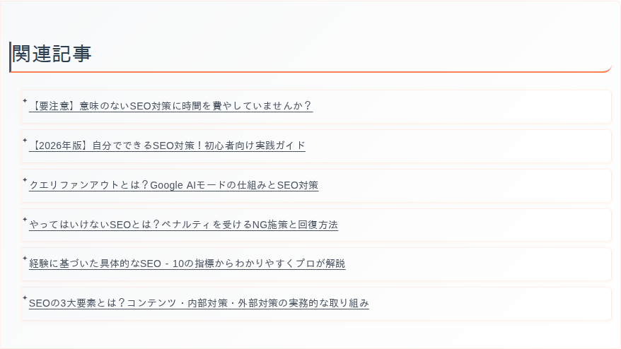
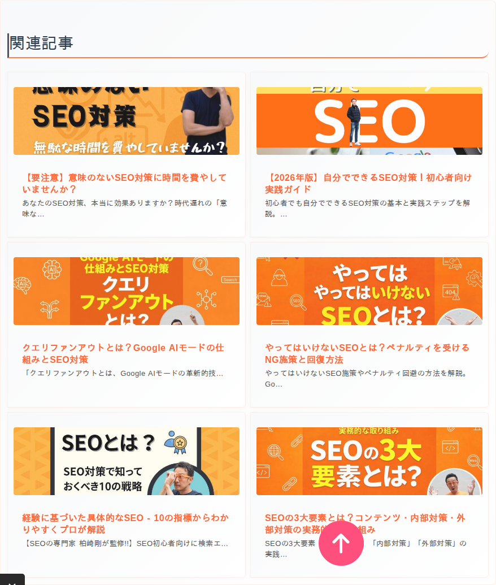
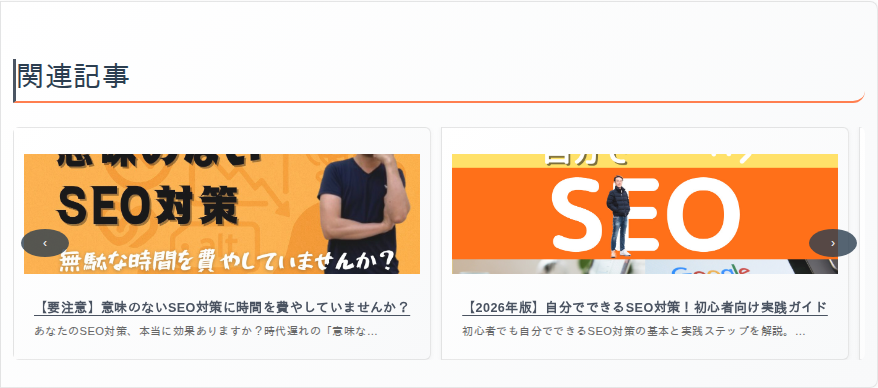

表示形式とカラーテーマ
関連記事の見た目は「表示形式」「カラーテーマ」「見出し」「挿入位置」で決まります。共通設定・投稿タイプ別のカスタム設定・記事ごとの設定のどこでも変えられます。
表示形式
リスト
記事のタイトルを縦に 1 列で並べます。場所を取らず、文字で読ませたいときに向いています。

グリッド
アイキャッチ画像付きのカードを格子状に並べます。画像で目を引きたいときに向いています。

スライダー
カードを横に並べ、左右のボタンやスワイプで送ります。一度に見せる数は「スライダー表示数」（デスクトップ・タブレット・モバイル別）で決めます。

カラーテーマ
見出しの下線やボタンなどの色です。6 色から選びます。

見出し
| 項目 | 説明 |
|---|---|
| 見出しの文字 | 関連記事欄の上に出す文字です（初期値「関連記事」）。お知らせなら「関連ニュース」のように、投稿タイプごとに変えられます。 |
| 見出しタグ | H2・H3・H4・DIV から選びます。本文の見出しの階層に合わせると、文書の構造が整います。DIV にすると見出しとして扱われません。 |
挿入位置
| 位置 | 説明 |
|---|---|
| 記事の後（初期値） | 本文の最後に入れます。読み終えた人に次の記事を案内します。 |
| 記事の前 | 本文の前に入れます。 |
| 最初の段落の後 | 本文の最初の段落の直後に入れます。 |
本文以外の場所（サイドバーやテンプレートの好きな位置）に出したいときは、ショートコード・ウィジェットを使います。